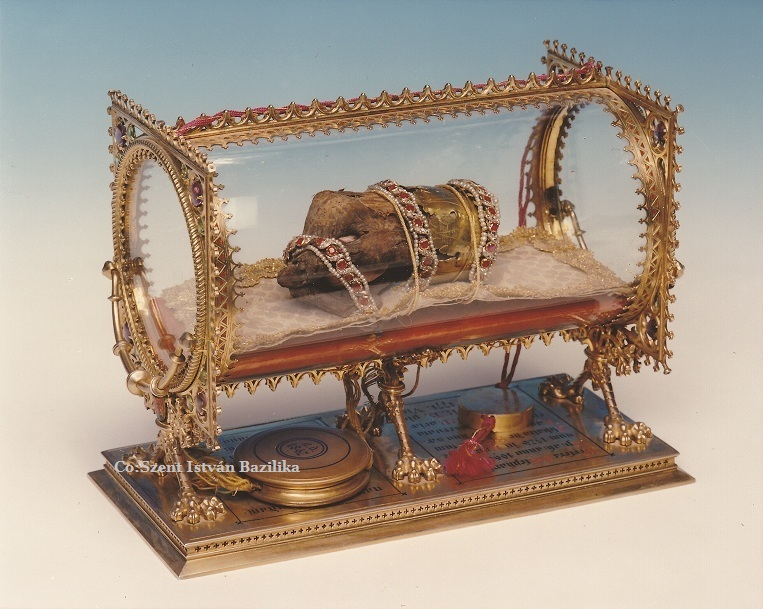
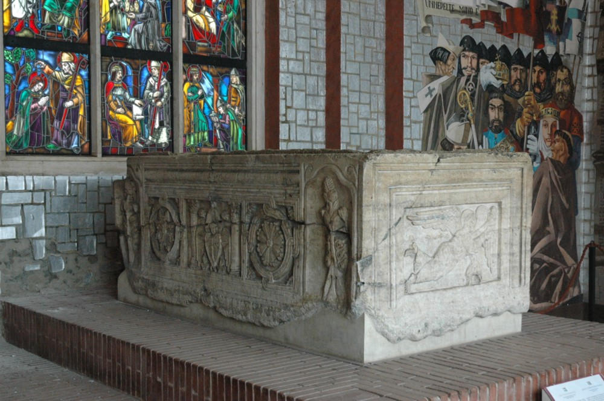
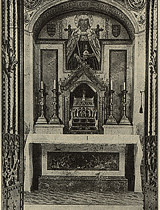
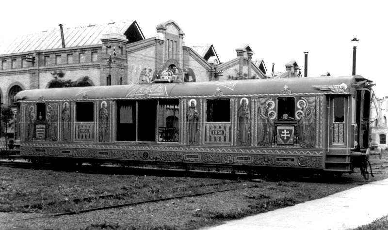
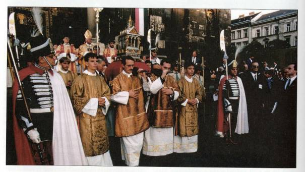

Szent István király halála után trónviszályos, zűrzavaros idők következtek.
Ekkor a fehérvári káptalan, féltve a bebalzsamozott és mumifikálódott holttestet a megszentségtelenítéstől, kiemelte a bazilika közepén álló márványszarkofágból, ahová 1038. augusztus 15-én temették el István királyt, és a bazilika alatt lévő sírkamrában rejtette el. Ekkor történt, hogy az épségben megmaradt jobb kezet leválasztották, mivel csodás erőt tulajdonítottak neki, és a bazilika kincstárába vitték.
A kincstár őre Merkur volt, aki később eltulajdonította a szent ereklyét és bihari birtokán rejtette el. Mikor Szent László hírt hallott az ereklyéről, felkereste Merkurt a birtokán. Megbocsátott a "tolvajnak" és a Szent Jobb megtalálásának helyén, első királyunk tiszteltére, a szent ereklye méltó elhelyezésére, Szent Jobbi apátságot alapított. (Az apátság, s a körülötte kialakult mezőváros neve Szentjobb, a mai Románia területén található, román neve: Siniob)
Mikor Mária Terézia tudomást szerzett az ereklye hollétéről, mindent elkövetett annak visszaszerzése érdekében. Hosszadalmas diplomáciai tárgyalások után a raguzaiak kiadták, így 1771 április 16-án már Bécsben csodálhatták a hívek, majd nagy pompával Budára szállították. Itt a Szent Jobbot az Angolkisasszonyok gondjaira bízta Mária Terézia, ezzel együtt elrendelte Szent István napjának, augusztus 20-ának megünneplését.
Az 1800-as évek elején II. József rendeletére a keresztesek férfirendje őrizte, majd a rend megszűnése után, 1865-től az esztergomi főegyházmegye feladata volt a Szent Jobb biztonságos őrzése. Az 1900-as évek elején a budavári palota Zsigmond-kápolnájába került, ahol 1944-ig volt látható. A Szent Jobb történetének megbecsülésekben bővelkedo idoszaka a két világháború közti évekre tehető. Ennek is kiemelkedő eseménye volt az 1938-as esztendo. Még 1937 októberében a Magyar Katolikus Püspöki Kar elfogadta a "kettős szentév" programját, amely a 34. eucharisztikus világkongresszus és a Szent István jubileumi év előkészítésének tervét tartalmazza. Amikor meghirdették első apostoli királyunk halála 900. évfordulójának megünneplését - a Szent István jubileumi évet -, elhatározták, hogy a kereszténység ezen kimagasló ünnepén méltóképpen fognak megemlékezni Szent István Az 1938-as budapesti eucharisztikus világkongresszus alkalmával a képen látható vasúti kocsin történt Szent Jobb országjárása.királyunkról, és ez alkalomból a Szent Jobbot körülhordozzák az országban.Az ünnepségsorozat nyitó rendezvényét május 30-án, közvetlenül az eucharisztikus világkongresszus bezárását követően rendezték.
A II. világháború alatt a Szent Jobbot a koronázási ékszerekkel együtt elhurcolták, és egy salzburgi barlang mélyén rejtették el. Itt talált rá az amerikai hadsereg, s megőrzésre a salzburgi érseknek adták át. Az Amerikai Katonai Misszió három tagja hozta vissza Magyarországra, az 1945. augusztus 20-i körmenetre.
Az ünnepség végén a Szent Jobbot visszavitték az Angolkisasszonyok zárdájába, és ott orizték 1950-ig, a rend feloszlatásáig.
Ezután a Szent István Bazilika plébániájának páncélszekrényében rejtették el, mert ezekben az években már nem volt szabad nyilvános körmentben tisztelni Szent István jobbját.
Így volt ez 1987. augusztus 20-ig, amikor a Szent István Bazilikában Dr. Paskai László bíboros, esztergomi érsek fölszentelte a Szent Jobb kápolnát, melynek létrejöttét néhai Lékai László bíboros kezdeményezte. Itt helyezték el nagy királyunk ereklyéjét, mely azóta is látogatható. Szent István király halálának 950. évfordulóján, 1988-ban ismét sor kerülhetett a Szent Jobb országjárására. Az érseki és a püspöki székvárosokban, valamint Pannonhalmán tízezrek fogadták a Nemzeti Ereklyét megilletődve és áhítattal.1989-től ismét évről évre elindul Szent István napján a könyörgő körmenet.
Forrás: http://www.bazilika.biz/a-szent-jobb-tortenete/a-szent-jobb-tortenete